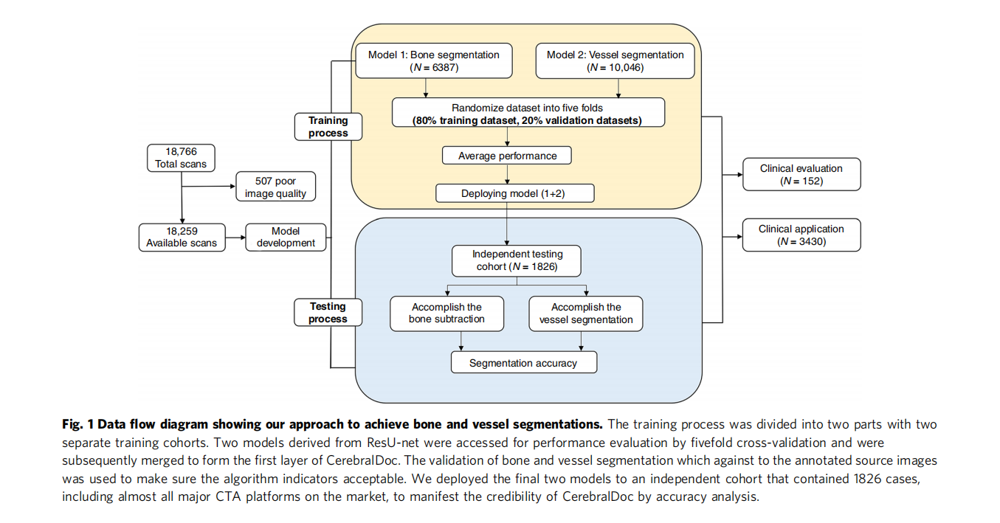
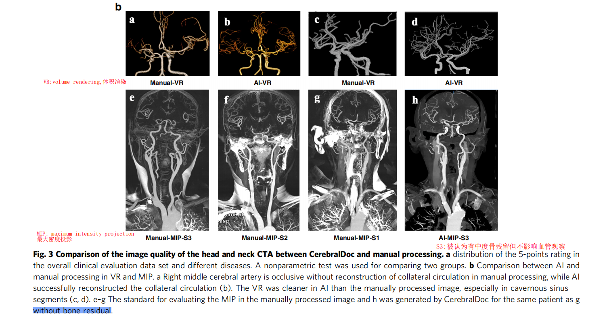

论文简介
基于三维卷积神经网络的头颈部血管图像快速分割与重建
Fu, F., Wei, J., Zhang, M., Yu, F., Xiao, Y., Rong, D., Shan, Y., Li, Y., Zhao, C., Liao, F., Yang, Z., Li, Y., Chen, Y., Wang, X., & Lu, J. (2020). Rapid vessel segmentation and reconstruction of head and neck angiograms using 3D convolutional neural network. Nature communications, 11(1), 4829. https://doi.org/10.1038/s41467-020-18606-2
Publish Year: 2020
期刊：Nature Communications
下载地址：https://www.nature.com/articles/s41467-020-18606-2.pdf
摘要
计算机断层扫描血管造影图像（ computed tomography angiography, CTA）的后处理（分割、重建）操作时一项非常消耗时间、且易于出错的任务。本片论文提出了一种充分利用生理解剖学的 3D 卷积神经网络 CTA 重建系统。
数据集来自中国 5 家三甲医院的 18766 例头颈部 CTA 扫描图像。最后的结果为 DSC = 0.931，该系统的结果与人工处理的图像具有一致性，符合临床要求，临床评估结果合格率为 92.1%。
该系统部署应用 5 个月之后，对于每一个病例的处理时间从 $14.22\pm 3.64$ 减少到 $4.96 \pm 0.36$ 分钟，促进了临床工作流程。
Introduction
计算机断层血管造影（CTA）是一种广泛的、微创的、经济有效的成像方式，用于头颈部血管的常规临床诊断。可视化分析头颈部的血管系统（血管成像重建）通常由经验丰富的计算机断层扫描技术人员进行。
血管是曲折和有分支的，因此，准确的血管分割、保证连续性（不中断）是一个具有挑战性的任务。除此之外，分割还容易受到其他组织的影响，如颅内入口血管的 CT值与颅骨 CT 值高度相似，这可能导致血管外组织粘连，影响后续疾病诊断。
深度神经网络架构是克服上述技术障碍的最有效途径。U-Net 已经被证实了其在医学图像分析中的应用前景。3D CNN 符合生理解剖，目标图像的形态学特征是专门为分割任务设计的。
本篇论文开发了一种基于优化解剖学先验知识的 3D-CNN 自动成像重建系统（CerebralDoc，脑科医生），用于重建原始的头颈部 CTA 图像，帮助工作人员建立节省时间的工作流程。
最后，对 CerebralDoc 进行全面评估，结果表明，将人工智能技术集成到放射科工作流程中，能大幅度提高工作流程效率，降低医疗成本。
Results
患者及影像特征
数据集包含 18766 例头颈部 CTA 扫描的患者，手工筛选排除 507 例低质量图像。表 1 总结了用于训练、验证和独立测试的 CTA 扫描数据集。
模型性能
数据增强后，有 91,295 例（扩增了 5 倍）用于训练。3D-CNN 使用使得 U-Net + bottleneck-ResNet（ResU-Net）。CerebralDoc 系统分为两个主要部分：
- ResU-Net：主要负责骨分割和血管提取；
- connected growth prediction model (CGPM). 关联增长预测模型：负责曹正血管的连续性；

模型训练过程包括骨分割和血管分割。血管分割（Vessel Segmentation）和 Bone Segmentation 的 DSC、V-score、Recall 如下 Fig.2。
CerebralDoc 的临床评估
- AI 和手工处理在整体临床评估数据集和不同疾病中的 5 分评级分布；
- Fig 4 直接呈现由 CerebralDoc 和手工处理生成的图像；
- 两图都得出相同结论：CerebralDoc 和人类输出之间没有统计学上的显著差异（图 3a和 4）。

- VR 和 MIP 中 AI 与人工处理的比较；
- 人工处理中右侧大脑中动脉闭塞，未重建侧支循环（a），AI 成功重建侧支循环（b）；
- AI 比人工处理的图像更清晰，尤其是海绵窦段（c-d）
- 在 CerebralDoc 中，由于算法中的自动骨分割，所有的 MIP 图像都被评分为3分（被认为有中度骨残留但不影响血管观察）。
CerebralDoc 的临床应用效果
- 所有接受头颈部 CTA 检查的患者，包括动脉粥样硬化性溃疡、动脉瘤、烟雾病、颈部支架植入术的患者，均使用 CerebralDoc。
- 2019 年 7 月至 11 月，宣武医院临床共 3430 例患者行头颈部 CTA 扫描；经经验丰富的技术人员评价，成功重建 3122 例(91.0%)。最后，将 2649 张重建图像应用于临床(图7a)。而且，随着医生信任度的提高，重建图像被推送到诊所的概率从 243 逐渐增加到 753 (图7b)。
比较 CerebralDoc 与手工处理的性能
两位技术人员手工处理一个病例的平均耗时为：13.48 ± 3.67、14.95 ± 3.65 分钟，使用 CerebralDoc 后耗时为 14.22 ±3.64、4.94 ± 0.36 分钟。点击次数的差异更为巨大。
Discussion
提出了 CGPM 来修正血管分割错误，避免部分缺失血管。此外，作者们在宣武医院将 CerebralDoc 应用于临床场景，利用人工智能重建直接用于头颈部血管疾病诊断的 CTA 图像。
结果表明：3D-CNN 深度学习算法可以在各种增强 CTA 扫描中以高灵敏度和特异性自动完成骨骼和血管分割（包括主动脉、颈动脉和颅内动脉）。
CerebralDoc 重建的图片质量由两名临床经验丰富的放射科医师进行评估，合格率为 92.1%。
以往将深度学习用于血管分割任务的研究大多集中在算法优化和模型结构方面，这些工作促使我们开发了一种有针对性的自动化临床血管分割工具(补充表2)。
- Y-Net：对 49 例磁共振血管造影（MRA）数据进行颅内动脉三维分割，测试集的精度为 0.819；
- HalfU-Net：脑血管病患者(TOF)-MRA 血管分割，DSC=0.88；
- MS-Net：全分辨率分割算法，提高了分割精度和分割精度，并显著降低了监督成本；
大部分的工作主要集中在特定血管区域的分割，而完整的头颈部 CT 扫描包括三种不同大小的血管（主动脉、颈动脉和颅内血管），这使得模型很难捕捉到跨尺寸级别的血管特征。
另一方面，以前的大多数研究都是由相对较小的有限的数据集得来的，缺乏来自真实临床数据的验证。
因此，通过优化的基于生理解剖学的 3D-CNN，在保证最大 patch 大小（256 × 256 × 256 体素）的前提下，建立一个全面的管道，实现头颈部 CTA 自动后处理（分割重建），具有重要的临床意义。
U-Net 于 2015 年提出，之前的研究使用了这种策略，将大图像裁剪成小碎片，导致整体血管的结构特征丧失。考虑到血管完整性的重要性，本片论文的策略采用裁剪的方式将原始的 3D 切片输入到 3D CNN 中，并使用残差块 bottleneck-ResNet (BR) 对 U-Net 架构进行修改，从而自动找到优化的模型参数。
连接三个不同大小层次的血管只仍然是一个挑战。基于生理解剖信息，我们将整个体积划分为三个区域（主动脉、颈动脉和颅内区域）用于网络，以更好地提取不同大小血管的特征。
此外，还提出了 CGPM，通过对没有标注的原始 CTA 图像的输入数据、ResNet1、ResNet2 和 ResNet3 产生的当前分割结果以及标注的 CTA 图像进行学习，修正血管分割的错误，有效避免部分血管的缺失。
由于从主动脉到颅骨范围广，且脑动脉血管曲折分支，很少有研究从头颈部 CTA 扫描中对血管分割进行研究（文中又列出一些）。本文的研究是一项多中心、大样本的研究，按照临床后处理过程，完成主动脉至颅内动脉的骨分割和血管分割的自动框架。
CerebralDoc 在的评估结果在不同疾病中的整体合格率和表现与手工加工没有显著差异。
3D-CNN 可以学习血管特征，更准确地改善和捕获血管信号。
CerebralDoc 仍存在一定的局限性：
（1）头颈部动脉严重异常起源（除左椎体直接产生于主动脉和严重狭窄起源外的异常血管常规）的患者图像不包括在训练和验证集中。因此，需要进一步的临床收集和测试来评估各种形式的颅骨和颈部血管的临床准确性。由于这种畸形的发生率相对较低，所以这个问题并不影响最终的整体结论；
（2）未进行噪声图像进行测试；
（3）CerebralDoc 目前只适用于 head and neck CTA images。
总结，CerebralDoc 是一个实用的头颈部 CTA 重建系统。与现有的 CTA 图像优化重建技术相比，它提供了一种省时、不依赖主观性的方法，节省了成本，提高了效率。基于人工智能的标准化自动 U-Net 和可视化后处理图像的生成，CerebralDoc 有潜力融入目前的放射手术工作流程。
Methods
数据的准备
数据集包含 18766 例头颈部 CTA 原始造影增强图像，有中国 5 家三甲医院提供。所有头颈部 CTA 图像扫描包括主动脉、颈动脉和颅内动脉，Z 轴的切片为 561~967 slices。
人工初步筛查排除了 507 例低质量的数据。所有患者 CTA 图像均为 DICOM 格式。
本研究的初步获取了 2018 年 1 月至 2019 年 2 月期间，4 家不同的 CT 制造商的 18259 例患者的 14461128 张头颈部 CTA 扫描图像。
训练集：16433 例患者
测试机：1826 例患者
训练时，将 16433 例患者分给两个模型，Model 1 进行骨分割（6387 例），Model 2 进行血管分割（10046）。
在进行临床评估时，从宣武医院获取 2019 年 5 月至 2019 年 6 月期间额外的 152 例进行评估。这些数据依然是有标注的数据，两名经验丰富的临床医生，随机采用 5 分制评估影像质量是否满足诊断要求（医生不被告知来源手工标注还是 AI 输出）。
最后，搜集临床应用集，主要用于验证模型在 7 ~ 11 月真实临床应用场景下的性能。
放射科医生标注
为了减少人为误差，采样分层标注的方法。具体来说：
（1）首先使用 ITK-SNAP 对 18259 例样本进行预标注，分别标记骨、主动脉、颈动脉和颅内动脉区域，它们被分为四类。
（2）由 10 名 2+ 年经验的技术人员矫正预标注图像；
（3）由 2 名 5+ 年经验的放射科医生进行复核。如果两名医生意见不一致，则请 10+ 年经验的医生做最后决策；
每例数据所需的平均处理时间约为 22 分钟。
数据预处理和图像增强
尽管标注非常专业和严谨，但是仍然会存在零散噪声。解决的方法是连通分量检测算法（a connected component detection algorithm），消除了散射噪声，提高了数据的鲁棒性。
数据增强策略：
- 水平翻转
- 不高于 25° 的旋转
- 不高于 20 pixel 的水平/垂直平移
- 选择一个矩形区域，随机擦除像素、随机遮挡
经过增强后，数据量由 N 增大到 5N。为了增强鲁棒性，在训练时还加入了高斯噪声。
模型开发
自动分割框架包含三个级联的 ResU-Net，完成去骨、提取血管。ResU-Net2 是专门为 Bone edge optimization 设计的，CGPM 用于消除血管分割错误，有效避免部分或缺失的血管节段。
ResU-Net1 和 ResUNet2 模型负责在相同的高分辨率下使用语义分割对整个骨骼进行分割，并根据动脉的大小学习将血管划分为主动脉、颈动脉和颅内动脉的生理解剖结构特征。
根据生理解剖结构，采用 ResU-Net3 模型实现血管分割。
最后，提出的 CGPM 被应用于固定任何破裂的血管，并确保它们可以在形态学水平上被可行地预测和识别。
CGPM 基于 3D-CNN，输入数据包括：
- original CTA image without labeling
- 由 ResU-Net1,2,3 生成的分割结果
- 标注的 CTA 图像
CGPM 能准确定位部分缺失的位置，完成对缺失血管的补充。
消融学习，证明管道中每个部件的贡献。
模型性能评估指标
（1）DSC
-
Y: ground truth
-
$\hat{Y}$: binary predictions from the neural networks
-
$|Y| + |\hat{Y}|$: indicates the sum of each pixel value after calculating the dot product between the ground truth and the prediction.
（2）V-score
、
- V-score 是根据血管的解剖和形态位置来计算的，用于揭示血管分割的连续性和完整性。
- V-score 越高，血管位置越关键
（3）Recall
被正确预测为阳性的病例所占的比例。
临床评估
3 =血管描绘良好，无间断，血管侧支重建良好，血管图像清晰；
2 =正常血管轮廓，部分中断，狭窄程度与无遗漏的源图像相比有偏差；
1 =整个血管中断，与源图像相比有严重的狭窄遗漏。
2019年7月至11月，在宣武医院对 CerebralDoc 的临床应用价值进行了评估，主要从以下几个方面进行：
- 所有接受头颈部CTA检查的患者的覆盖率；
- 整体、每月、每天的后处理数量，以及成功推送到 PACS 的数量；
- 后处理所需的平均时间和
- 后处理的平均时间和 CerebralDoc 和技术员的点击次数（针对100个随机选择的病人）；
- 测试月份的临床生产力；
- 模型的错误率（探讨了原因）。
===
一些缩写
volume rendering (VR)
maximum intensity projection (MIP)
curve planar reconstruction (CPR)
curved multiple planar reformation (MPR)
connected growth prediction model (CGPM)
computed tomography angiography (CTA)
bottleneck-ResNet (BR)
time-of-flight(TOF)-MRA
absolute volume difference (AVD)
===